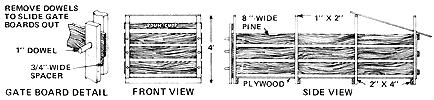
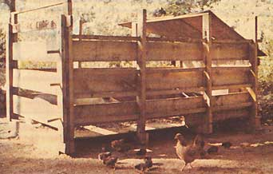

My wife and I had always wanted to raise our own bacon, but-because we live on a small lot in a Florida real estate development-we hesitated to buy a real, live pig. Problem is, you just can't have a porker or two running around on the lawn (or worse, other people's lawns) in a neighborhood like ours.
Still, despite our less-than-perfect locale (and despite the fact that we'd never raised a hog before), we were determined that someday we'd give pig ownership a try.
As luck would have it, a friend of mine approached me at work one day last year-about, a week before Christmas-and asked if I wanted to buy a pig.
"Nope," I answered, and went on to list my reasons.
"But you can give it to your wife for Christmas," my co-worker said, half jokingly.
Well I mulled that suggestion over awhile . . . and decided that, by gosh, a pig would make one hell of a good Christmas present! (It certainly wouldn't be the sort of thing my wife would expect or forget.) So-putting aside all thoughts of neighbors and lack of space-I, looked my buddy square in the eye and said, "OK. I'll take it!"
Thus, when Christmas morning rolled around, I had a thoroughly surprised and delighted wife . . . plus a seven-week-old pig! There was just one little problem: The small wire cage in which I'd brought our plump little friend home was much too tiny to serve as his permanent residence. Our piglet obviously needed a much larger home . . . and right away.
So we built a simple pigpen consisting of one full sheet (4' X 8') of exterior-.grade 1/2-inch plywood (for the floor) set in a cradle of four 48" X 56" two-by-four frames, and some eight-foot-long pine boards for siding. I call it the "Quick and Easy" pigpen, because it goes together quickly and easily with the aid of just a few basic hand tools. (! spent around $30 on our pen. . . but only because I chose to use all-new lumber. You should be able to put together a similar sty for much less-if not for free-from recycled materials.)
To construct "Pork Chop's" pen, I first nailed two 48-inch-long two-by-fours to the ends of a 56-inch-long two-by-four-and closed the open side of the resulting rectangle with a 1" X 2" furring strip-to make one of the sty's four main frames. Then, after fabricating three more identical rectangles, I simply [1] stood them all upright, [2] spaced them an equal distance (about 32") apart, [3] laid the 4' X 8' sheet of exterior-grade half-inch plywood inside the four sections of framing, and [4] nailed the plywood floor down.
I used 8-inch-wide pine boards, eight feet long and spaced four inches apart, for the pen's sides. It's important to nail these planks to the inside of the stall, by the way. (If you were to spike them to the outside of the pen, the hog would eventually push them loose as he banged against and scratched his rump on the planks.)
We mounted gate boards on one end of the pen so that we could slide them in or out (see diagram). This made it easy for us to let our growing porker out regularly while one of us got in to clean his quarters. (We closed off the other end of the sty with a piece of plywood that was cut to fit and spiked on with extra nails. We also covered that end of the pen with a simple plywood roof to give our piglet a little shade.)
Although some folks might think it cruel to raise a hog in such a small area, it's not. Ours lived like a king for the four months we kept him. We changed his bedding of hay or oak leaves (raked from the lawn) every day or two, and buried the old bedding in the garden (to help keep down unwanted odors and-at the same timefertilize our plants). We also fed Pork Chop rather lavishly twice a day . . . and when it came time to butcher the animal, he tipped the scales at 225 pounds!
When all was said and done (and eaten), we figured the cost of our homegrown, home-butchered, and homecured pork at around 45 cents per pound . . . which isn't too bad, for a first attempt at hog-raising.
And it certainly never would've happened right here in a Florida development without the Quick and Easy Pigpen!
|
 |
 |
|